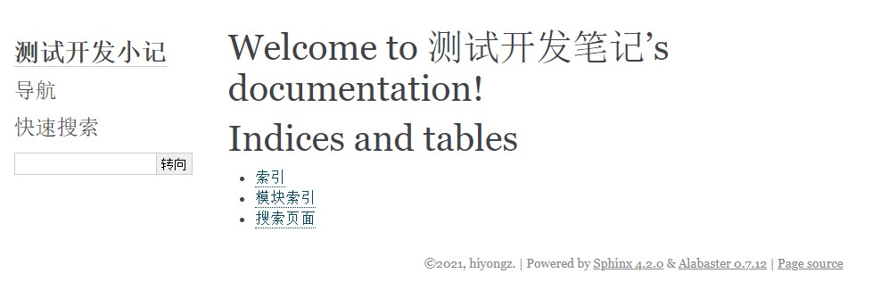
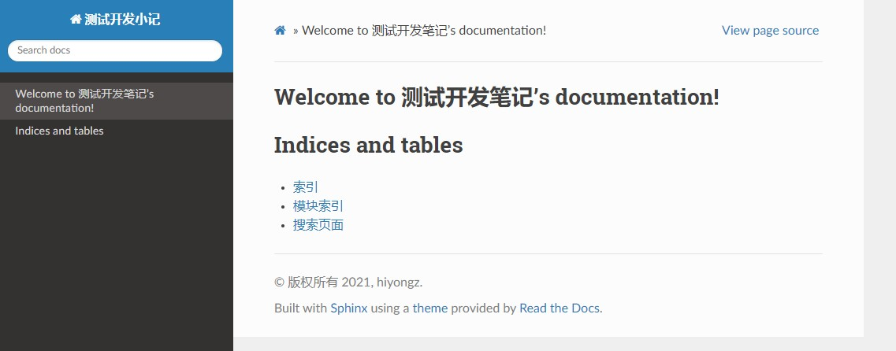
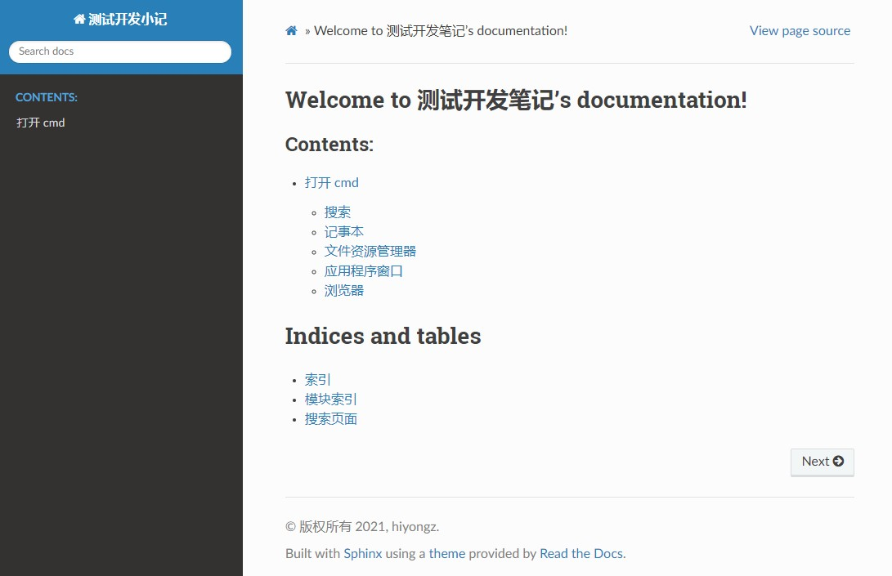
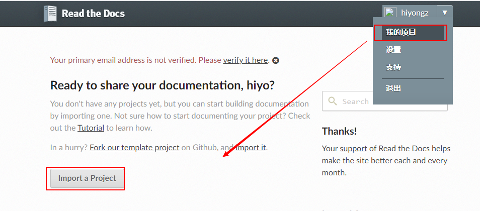
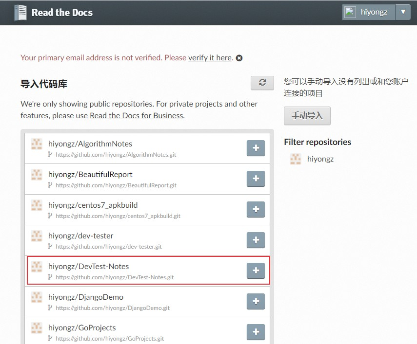
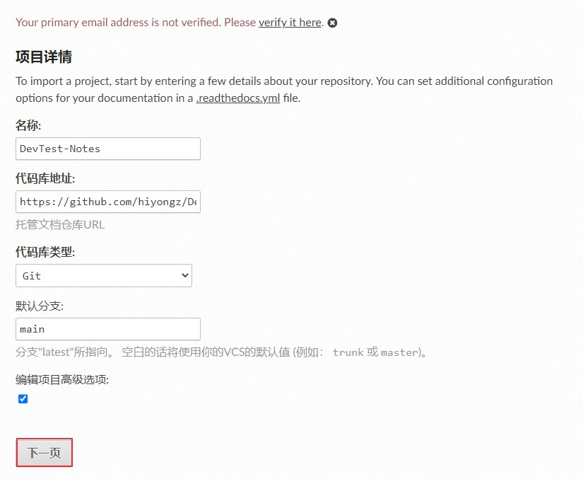
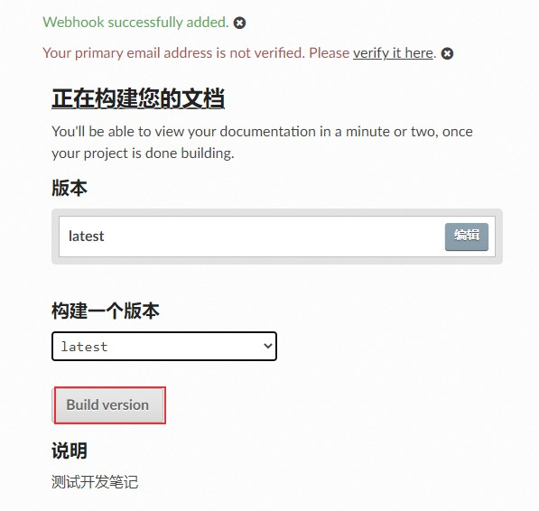
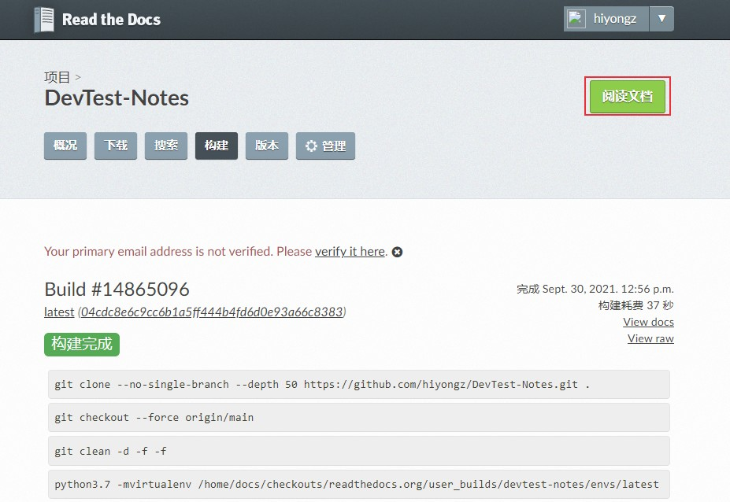
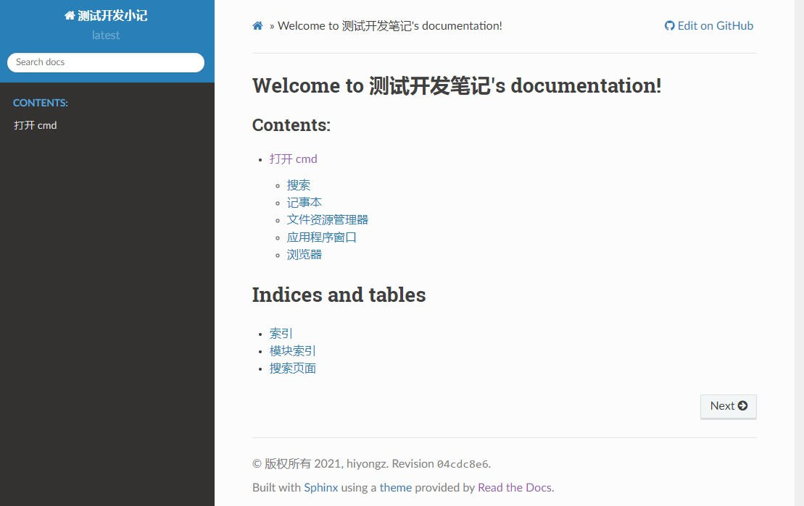

我写博客的初衷是为了系统的构建自己的知识体系，目前使用的平台有微信公众号，CSDN，博客园，GitHub Pages和Gitee Pages，他们都各有优缺点，整理的笔记多了之后发现这些平台不是很方便，比如公众号，CSDN和博客园，每次写完文章后，还需要再平台上进行编辑再发布，比较麻烦；GitHub Pages和Gitee Pages虽然可以快速发布，但是在文章系统管理上不是很方便。我希望将笔记整理成类似电子书一样，方便搜索和管理，经过查询资料，发现了ReadTheDocs这个文档管理工具，比较符合我的需求。可以使用 Sphinx 生成文档，GitHub 托管文档，然后导入到 ReadtheDocs进行展示，本文记录一下搭建过程。
准备条件
1、github账号
使用github对文档进行版本管理
2、注册Read the Docs账号
官网地址：https://readthedocs.org/
3、安装Python
Sphinx是一个python工具，用于生成文档，所以需要安装Python环境。
Sphinx创建文档
Sphinx是一个基于Python的文档生成项目，开始是用来生成 Python 官方文档的工具，更多介绍可参考官网：https://www.sphinx.org.cn/ 。
1. 安装Sphinx
Sphinx的GitHub地址：https://github.com/sphinx-doc/sphinx
pip安装Sphinx
1 | $ pip install -U sphinx |
2. 创建文档
先将远程github仓库clone到本地，这个仓库是你要托管文档的仓库，如果没有就新建一个。
clone到本地后，在项目根目录创建一个docs目录，cd进入docs目录，执行如下命令：1
2
3
4
5
6
7
8
9
10
11
12
13
14
15
16
17
18
19
20
21
22
23
24
25
26
27
28
29
30
31
32
33
34
35
36
37$ sphinx-quickstart
Welcome to the Sphinx 4.2.0 quickstart utility.
Please enter values for the following settings (just press Enter to
accept a default value, if one is given in brackets).
Selected root path: .
You have two options for placing the build directory for Sphinx output.
Either, you use a directory "_build" within the root path, or you separate
"source" and "build" directories within the root path.
> Separate source and build directories (y/n) [n]: y
The project name will occur in several places in the built documentation.
> Project name: 测试开发小记
> Author name(s): hiyongz
> Project release []: 0.1.0
If the documents are to be written in a language other than English,
you can select a language here by its language code. Sphinx will then
translate text that it generates into that language.
For a list of supported codes, see
https://www.sphinx-doc.org/en/master/usage/configuration.html#confval-language.
> Project language [en]: zh_CN
Creating file D:\pythonproj\devtest\source\conf.py.
Creating file D:\pythonproj\devtest\source\index.rst.
Creating file D:\pythonproj\devtest\Makefile.
Creating file D:\pythonproj\devtest\make.bat.
Finished: An initial directory structure has been created.
You should now populate your master file D:\pythonproj\devtest\source\index.rst and create other documentation
source files. Use the Makefile to build the docs, like so:
make builder
where "builder" is one of the supported builders, e.g. html, latex or linkcheck.
上面的配置可以选择默认，稍后修改生成的conf.py配置文件即可。
设置完成后，目录结构如下：1
2
3
4
5
6
7
8
9
10│ make.bat
│ Makefile
│
├───build
└───source
│ conf.py
│ index.rst
│
├───_static
└───_templates
- build 存放编译后的文件
- source/_static 存放静态文件
- source/_templates 存放模板文件
- source/conf.py 项目配置文件，上面的配置可以在这里面修改
- source/index.rst 首页
3. 编译
对rst文件进行编译生成HTML及相关静态文件：
1 | $ make html |
index.rst文件内容会编译到_build/html目录下。
打开_build\html\index.html文件，下面是渲染出来的HTML页面：

默认主题不好看，可以配置其它主题。
4. 配置主题
安装sphinx Read the Docs主题
1 | pip install sphinx_rtd_theme |
更多主题可到官网 https://sphinx-themes.org/ 查看。
配置source/conf.py 文件：
1 | import sphinx_rtd_theme |
重新编译：1
$ make html
打开_build\html\index.html文件，可以发现主题配置成功。

5. 配置markdown
Sphinx默认使用 reStructuredText 标记语言，由于已经习惯使用markdown进行文档编辑，下面来配置markdown。
1) 安装recommonmark插件
1 | pip install recommonmark |
2）安装支持markdown表格的插件
1 | pip install sphinx_markdown_tables |
ReadTheDocs的python环境貌似没有sphinx_markdown_tables，在构建时可能报如下错误：1
ModuleNotFoundError: No module named 'sphinx_markdown_tables'
解决方案是在docs目录下新建一个requirements.txt文件，写入如下内容：1
sphinx-markdown-tables==0.0.15
3）配置source/conf.py 文件
增加：
1 | extensions = ['recommonmark','sphinx_markdown_tables'] |
在source目录下创建一个markdown文件，将makdown文件名添加到source/index.rst 中
1 | .. toctree:: |
重新编译

4）提交上传
.gitignore文件添加docs/build/目录，不需要上传这个目录。上传：
1 | git add . |
关联Read the Docs
关联Read the Docs，使其可以在线访问文档。
浏览器访问 https://readthedocs.org/， 点击【我的项目】-> 【Import a Project】：

选择仓库

点击下一步

构建版本

构建完成后，点击阅读文档

构建成功

在线文档地址为https://devtest-notes.readthedocs.io/。
参考资料：
- https://www.sphinx.org.cn/
- https://readthedocs.org/
- https://github.com/readthedocs/readthedocs.org
- https://docs.readthedocs.io/en/stable/tutorial/
- https://www.osgeo.cn/sphinx/usage/markdown.html
- https://www.sphinx-doc.org/zh_CN/master/usage/configuration.html
- https://iridescent.ink/HowToMakeDocs/Basic/reST.html
本文标题:电子书创建：Sphinx + Github + ReadTheDocs
文章作者:hiyo
文章链接:https://hiyongz.github.io/posts/personal-blog-for-sphinx-readthedocs-and-github-guide/
许可协议:本博客文章除特别声明外，均采用CC BY-NC-ND 4.0 许可协议。转载请保留原文链接及作者。